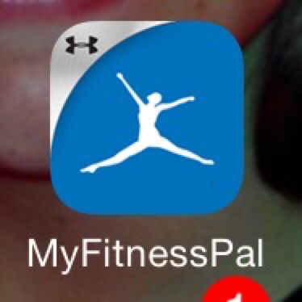
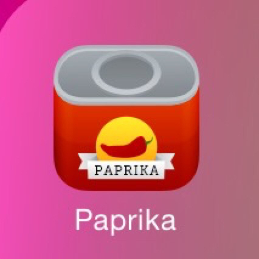
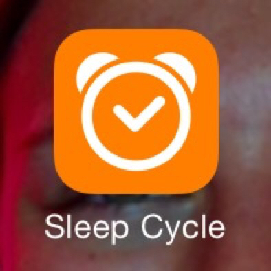
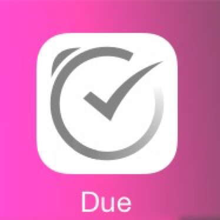
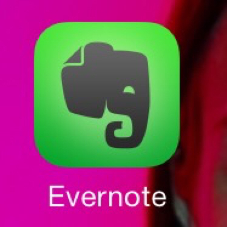
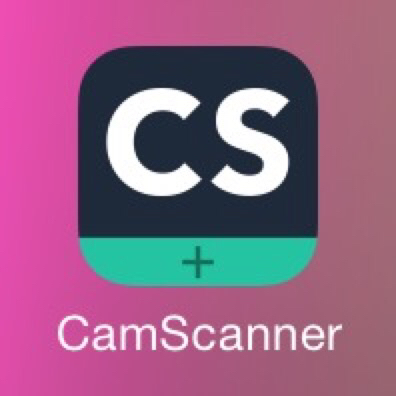
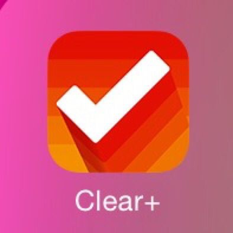
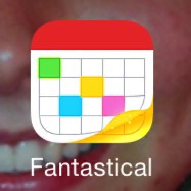
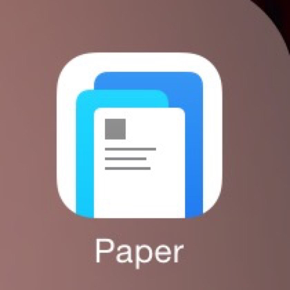

FAVORITE IPHONE APPS, RANKED
-

My Fitness Pal
I'm hardly alone with this one, but this app helped me lose 55 pounds and I've continued to track my calories ever since because it just works well. Also integrates with fitness trackers like Apple Watch. This app may have added years to my life.
-

Paprika
This is my favorite recipe app. Nicely designed, easy data entry, and syncs with all my devices including my Mac.
-

Sleep Cycle
I ignore all the mumbo jumbo about sleep quality or whatever. But this alarm clock app wakes you up sometime within 30 minutes leading up to your set time, automatically choosing a time your sleep is light. Sounds crazy (especially when the app asks you to put your phone under your fitted sheet) but it works exactly as advertised and I love it.
-

Due
My todo app for important things. I like it because it nags you repeatedly until you mark the thing done or snooze it so there's no way to get sidetracked and forget. If someone asks me to do something two weeks from now I just put it in Due and forget about it. Also works perfectly with the Apple Watch.
-

Evernote
I assume everyone knows what this is. Keeps my notes in sync across all my devices and works fairly well in the process. I use the heck out of this.
-

CamScanner
This is how I scan documents to save, reprint, or email. It works well in good light with automatic straightening and a good black-and-white mode for text.
-

Clear
My making lists app. Mostly shopping lists but good for any kind of list you want to quickly make and then mark things off as you go. It's interface is clever and designed for fast entry on a phone.
-

Fantastical
My favorite calendar app. The latest version is a touch flaky with multiple calendar accounts but I'm sure they'll sort it out.
-

Paper
This alternate app from Facebook gives you access to most of Facebook's features and content with a very nice fluid interface.